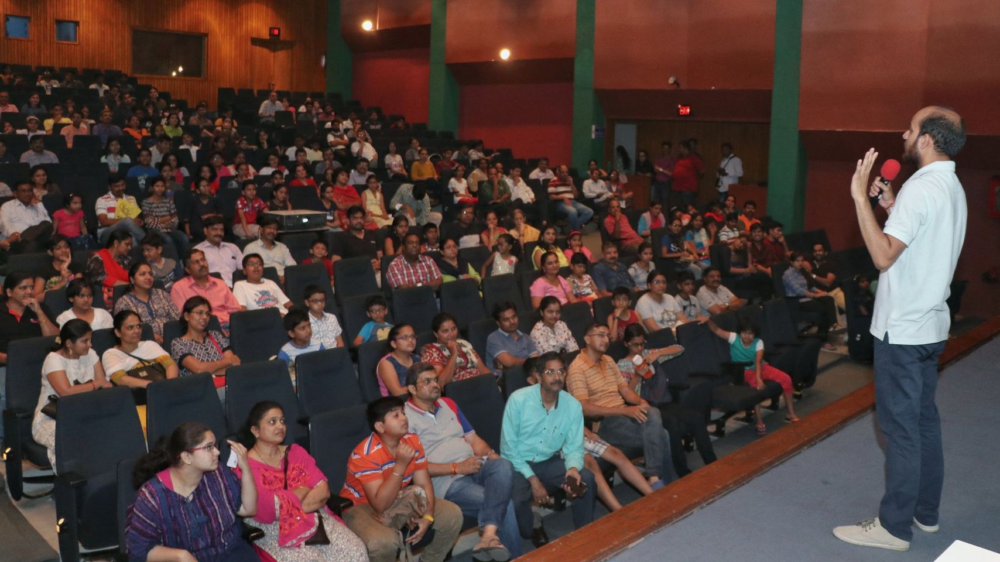
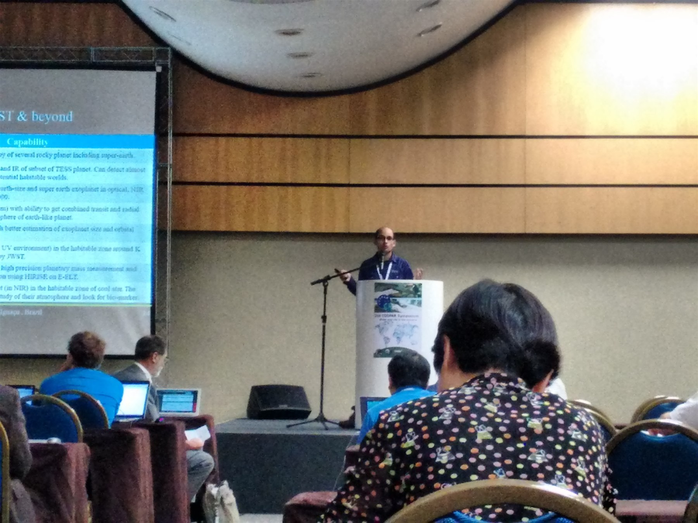
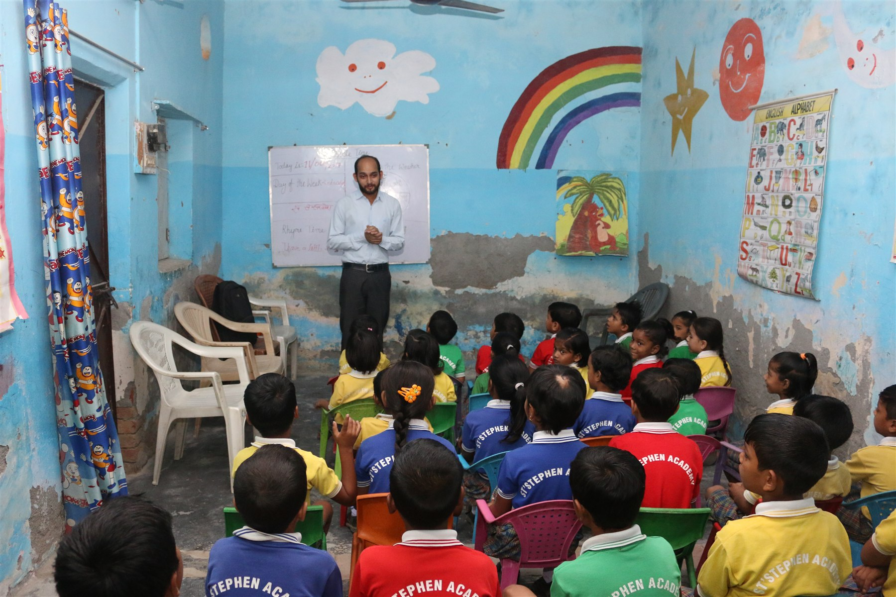

Programming
- PythonAdvanced
- MATLABBasic
- Git & GitHubBasic
Researcher · Scientific programmer · Educator
I’m Shivom Gupta, an interdisciplinary researcher working across human physiology, cognitive neuroscience and probabilistic modelling. I design experiments and build reproducible pipelines that turn noisy multimodal signals into testable scientific insight.
Research Associate at ISS Delhi · Science Lead, Sakshi Sense

About
My route into research began in aeronautical engineering, where fluid dynamics taught me to understand physical systems through models. At the University of Geneva, that perspective expanded to planetary systems: I used TESS photometry, Gaussian Processes, MCMC and transit models to study reflected light from hot Jupiters.
Today, I apply the same quantitative instincts to the dynamics of the human brain. At the Institute of Science and Spirituality in Delhi, I study meditation, attention and consciousness using EEG, physiological sensing and time-series analysis. As Science Lead for Sakshi Sense, I help translate experimental research into robust analytical workflows.
Across astronomy and neuroscience, my work asks a consistent question: how can careful experiments and computation reveal meaningful structure in complex, noisy systems?
At a glance
A cross-disciplinary toolkit for designing experiments, building analyses and communicating results.
Research
My research connects measurement, inference and scientific software across two data-rich fields.
Current research
I investigate how mantra-based meditation influences neural state transitions, neuroplasticity and physiological resilience, with particular attention to semantics, selective attention and ageing.
Applied research
At ISS Delhi and Sakshi Sense, I contribute to experimental design, data validation and modelling of cognitive states. Work includes respiration estimation from noisy audio and Gaussian-Process joint models for latent-state studies.
Past research
My Geneva thesis combined TESS observations, Gaussian Processes and BATMAN transit models to search for reflected-light eclipses from hot Jupiters, producing four new and eight marginal detections.
Data analysis pipeline
A reproducible, end-to-end EEG pipeline for P300 and neural-microstate research—from preprocessing and event validation to ERP features, microstate dynamics and group-level inference.
Research record
Experience
From planetary systems to human cognition.
Cognitive neuroscience
Lead quantitative analysis and data collection for 8- and 32-channel EEG studies of meditation, mind-wandering, attention and ageing. Develop reproducible preprocessing and neural time-series workflows, contribute to experimental design, and lead a study of mantra semantics, neuroplasticity and physiological resilience.
As Science Lead for Sakshi Sense, develop and validate physiological-sensing methods, including robust respiration estimation and improved Gaussian-Process joint-modelling workflows for latent-state research.
University education
Co-taught Alien Earths for nationally selected Lodha Genius Programme cohorts in 2025 and 2026, covering exoplanet detection, habitability, transit modelling, observing proposals and scientific writing. Supervised two senior-undergraduate teaching assistants and led a two-day educational visit to ARIES Observatory.
As Teaching Assistant for Exploring the Universe, supported a multidisciplinary cohort of 46 Young India Fellows through discussion sessions, office hours, assessment, final presentations, academic communication and course delivery.
Leadership & social enterprise
Founded a social venture connecting art and STEM education while creating opportunities for women artists. Led product development, surveys, fundraising and external collaboration, including work with the European Astronomical Society.
Astrophysics
Combined TESS photometry, Gaussian Processes, MCMC and BATMAN transit models in a nine-month MSc thesis on reflected light from hot Jupiters, reporting four new and eight marginal detections. Additional projects included the first wavelength solution for NIRPS, maximum-greenhouse modelling across 30 gases, and automated visualisation of LyC-emitter survey data.
Research outreach
Managed and mentored public-engagement, student and teacher-training programmes across India, communicating IUCAA-linked science including TMT, LIGO-India, AstroSat and Aditya-L1. Supervised two Fergusson College undergraduates in developing astronomy teaching resources for the International Astronomical Union and guiding high-school summer-school activities.
Science communication
Delivered astronomy workshops and national and international school campaigns, combining demonstrations, observations and hands-on learning. Initiated NASA Sally Ride EarthKAM and Project Paridhi activities in schools as part of programmes reaching more than 50,000 students.
Education & funding
Formal training in physical modelling, observational astronomy and engineering—supported by competitive scholarships at every degree stage.
Graduate degree
University of Geneva, Switzerland
Thesis: Reflected Light from Hot Jupiters as Seen by TESS ↗, supervised by Prof. Monika Lendl and Dr. Adrien Deline at Geneva Observatory.
Undergraduate degree
Dr. A.P.J. Abdul Kalam Technical University, India
Thesis: Co-Flow Jet flow-control aerofoil.
Funding record
More than INR 410,000 in Indian scholarship and research-travel support, plus CHF 8,800 for postgraduate study.
Teaching & Supervision
I combine classroom teaching, cohort support and hands-on mentoring for students moving from curiosity into real research practice.
Cohort instruction
Designed and taught a month-long introductory research programme for interns from IIT-Madras, IIT-Mandi and BITS Pilani. Training covered EEG, ECG, GSR, experimental design, data collection and scientific methodology, with guidance on laboratory practice and research projects.
As faculty, I taught nationally selected and highly talented high-school students in exoplanet detection, habitability, transit photometry, BATMAN modelling, observational proposals and scientific writing across the 2025 and 2026 cohorts.
Served as teaching assistant in 2025 for a multidisciplinary cohort of 46 fellows, supporting discussions, office hours, assessment, final projects, academic communication and technical delivery.
Voluntarily taught Space Sciences to undergraduate juniors and served as an edX community teaching assistant for Super-Earths and Life by HarvardX.
Undergraduate mentoring
Supervised two undergraduates(Bhavesh[Now PhD candidate at Max Planck] and Shreya) from Fergusson College at IUCAA in developing astronomy teaching resources for the International Astronomical Union, and guided them as resource persons for IUCAA summer schools for high-school students from 2018-2020.
As faculty for Alien Earths, supervised two senior-undergraduate teaching assistants (Agnim and Soumit) for the Lodha Genius Programme at Ashoka University across the 2025 and 2026 offerings.
Outreach
For nearly a decade, I have worked with students, teachers, researchers and public audiences—from groups of 30 to gatherings of about 1,500.




Contact
I’m interested in PhD, research-scientist and research-leadership opportunities in human physiology, cognitive neuroscience, multimodal biosignals and reproducible scientific computing.